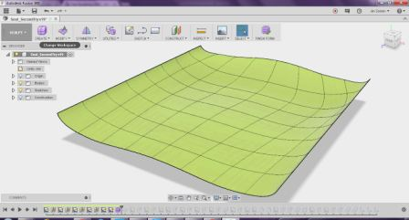
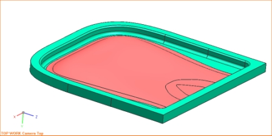
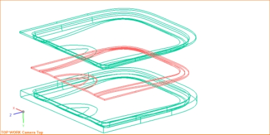
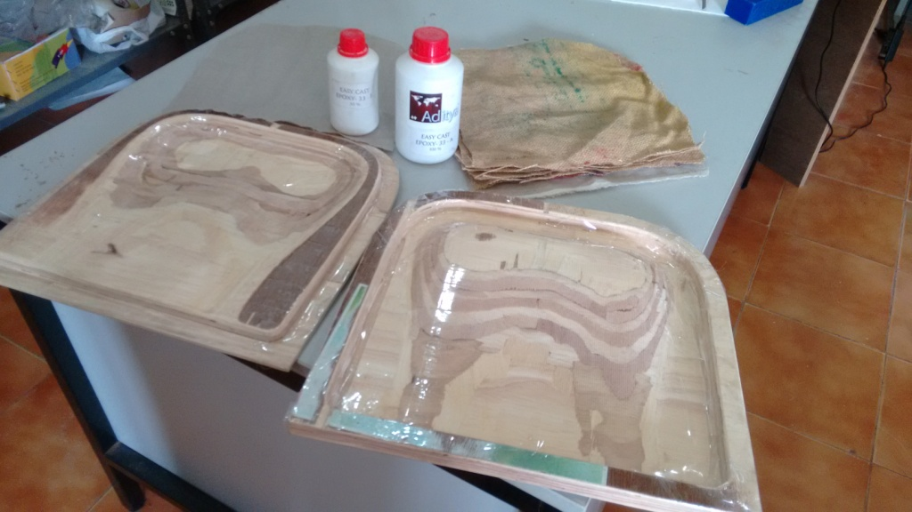

This week got introduced to composites fabrication, and this weeks assignment included reading of the material safety data sheet (MSDS) and technical data sheet (TDS) for the resins that at our lab. And mainly to design and fabricate a 3D mold (~ft2) and produce a fiber composite part in it.
Considering the ability to make curved form features by Composites, I thought it would be a good idea to make a Perfect seat. A bit of search in the internet showed that the sitting muscles on strecthes undesiringly when we sit in not so good chair or more importantly when not sitting in the correct posture.
Technically the muscles should be so supported that the pelvis is in the neutral position. Please see images and a good read on this subject is available in the following posture direct link. So I decided to make a seat that properly supports our sitting muscles and hence aiding the proper pelvic position. Also I thought to make it portable so that it could used in a car, at work etc.
I used Autodesk Fusion to do the Design. First I made the surface and then created the top and bottom solids. The steps used to create the seat surface and the mould parts are illustrated in the animation below

Later I also used NX to make the outer walls and the back support. See images attached moulds attached.


The tool paths were generated using Partworks software, and its cut uing the Shop bot. I have used (Avg) 18.7mm thk ply as the stock material. The mould is made in two pieces. The machining process started with the Rough cut using 6mm flat end mill, Finish Maching using 6mm Round head end mill, and the final outer profile cut using 6mm flat end mill. Each part took ~1.5 hrs each for rough cut, 30 mins each for the finish cut and 5mins each for the outer profile cut. I need to change the CNC code for the outer profile cut to cut out the piece fully as the thickness of the ply was not uniform.
The thickness on the base mould was bit low and I added few supports at the rear side. But if we are using say uniform thickness ply with atleast 18.5 mm every where then the back support need not be added.
Information from Amazon India regarding Aditya easy cast epoxy-33-A and Easy cast-33-B Epoxy Resin Murtisil 33 to make transparent statues. Very less viscosity Can Cure in 30 minutes if heated at 65 degree centigrade and poured Will cure at room temp in 24 hours Non - Yellowing Mix A and B in 2:1 ratio by weight
First the tape is stuck on the mould surfaces to ensure that the resin is not sticking to the rougher mould surfaces. I have used 5 layesr of Jute sheets (from discarded bags) and two layers of cotton cloth. The sheets were cut to the profile so that they fit inside the bottom mould properly. Then the resin and the hardner are missed in the ration of 1:0.5, and I needed to use 400g of Resin and 200g of hardner. After thoroughly mixing the resin and hardner, then the fabric is immersed in the resin mix and layed one by one on the bottom mould cavity. The two layers of cloth are used in the top and bottom and the resin layer is used in between. After all the layers are placed, the tp mould is used to close, and then I malleted it and also used pressure by hand first and later put the moulds under a heavy dust bag filled with the shop bot wood chippings. I left it for curing overnight and next day opened the mould and got the composite seat part out. These steps are illustrated in the following images.

This week, I have learned the designed and fabrication of composite parts and successfully made a composite portable seat.
The design files and the toolpaths for this week is available here